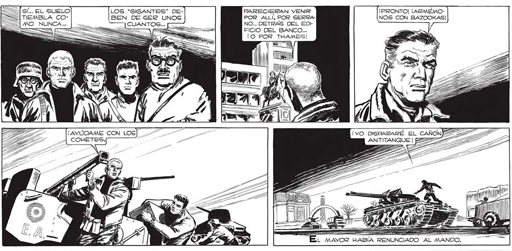
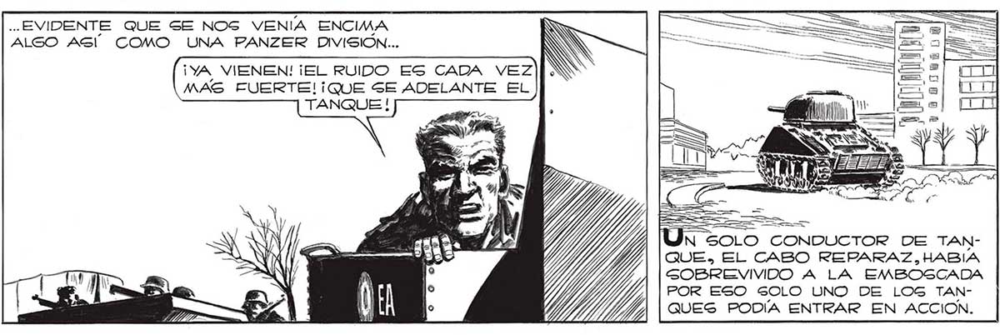

jsí... EL SUELO | TIEMBLA COMO NUNCA... | -TO "Y Pero LA EMERGENCIA LE DEVOL VIO” LA AUTORIDAD. ERA EL ÚNICO QUE ENTENDÍA ALGO DE TÉCNICA ANTITANQUE. POR EL SORDO RETUMBO CON QUE EL TODAVÍA INVISIBLE ENEMIGO GE ACERCABA, POR EL TEMBLAR DEL SUELO, ERA... LOS *GIGANTES” DE-| BEN DE SER UNOS FARECIERAN VENIR POR ALLÍ, POR SERRA NO... DETRAS DEL EDIFICIO DEL BANCO... ¡O POR THAMES! AGA — L MAYOR HABLA ..EVIDENTE QUE SE NOS VENÍA ENCIMA ALSO ASÍ COMO UNA PANZER DIVISIÓN... ¡YA VIENEN! ¡EL RUIDO EG CADA VEZ MAS FUERTE!¡QUE SE ADELANTE EL TANQUE ! ¡PRONTO! ¡ARMEMONOS CON BAZOOKAS! A] 14 SS me a! > TIA N SOLO CONDUCTOR DE TANQUE, EL CABO REPARAZ,HABIA SOBREVIVIDO A LA EMBOSCADA POR ESO SOLO UNO DE LOG TANQUES PODÍA ENTRAR EN ACCION. 209

